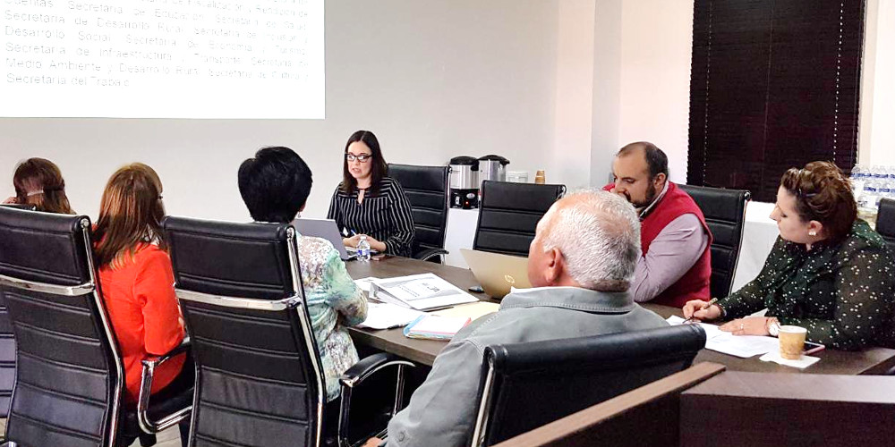

Integrantes del Comité Coordinador analizan programa de capacitación y designación de órganos internos de control de los OCA's
13 abril 2018
En reunión de trabajo integrantes del Comité Coordinador analizan programa de capacitación y designación de órganos internos de control de los OCA's
Secretaría Ejecutiva del Sistema Estatal Anticorrupción. Consejo de Participación Ciudadana del SEA.
Saltillo, Coahuila.- En reunión de trabajo, los integrantes del Comité Coordinador del Sistema Estatal Anticorrupción de Coahuila analizaron los planes de capacitación y la estrategia a seguir para dar a conocer las áreas de competencia del Sistema Estatal Anticorrupción entre el personal de la administración pública, los sectores y representantes de la sociedad civil en el estado.
Además evaluaron avances de la propuesta hecha por el Consejo de Participación Ciudadana del SEA, para proponer al Congreso del Estado un mecanismo de designación de los Órganos Internos de Control de los Organismos Constitucionales Autónomos y de la Auditoría Superior del Estado.
En la reunión que se llevó a cabo en la sede del Tribunal de Justicia Administrativa en Saltillo, el viernes 13 de abril de 2018, estuvieron presentes integrantes del Comité Coordinador del SEA, como el auditor Superior del Estado, Armando Plata Sandoval; Sandra Rodríguez Wong, magistrada presidenta del Tribunal de Justicia Administrativa; Teresa Guajardo Berlanga, secretaria de Fiscalización y Rendición de Cuentas; Manuel Gil Navarro, presidente del Consejo de Participación Ciudadana y Marcela Castañeda Agüero, secretaria técnica de la Secretaría Ejecutiva del Sistema Estatal Anticorrupción y representantes de la Fiscalía Especializada en Delitos por Hechos de Corrupción y del Consejo de la Judicatura del Tribunal Superior de Justicia del Estado.
Se acordó convocar a una sesión del Comité Coordinador del Sistema Estatal Anticorrupción para determinar la propuesta sobre los lineamientos para la designación de órganos Internos de Control de los Organismos Constitucionales Autónomos y de la Auditoría Superior del Estado, bajo un esquema que permita transparencia a las nominaciones y para que por medio del Consejo de Participación Ciudadana se realice la valoración técnica de las propuestas de los perfiles interesados que cumplen con aspectos técnicos requeridos, para que sea el Congreso del Estado quien decida sobre las designaciones en dichas áreas.

